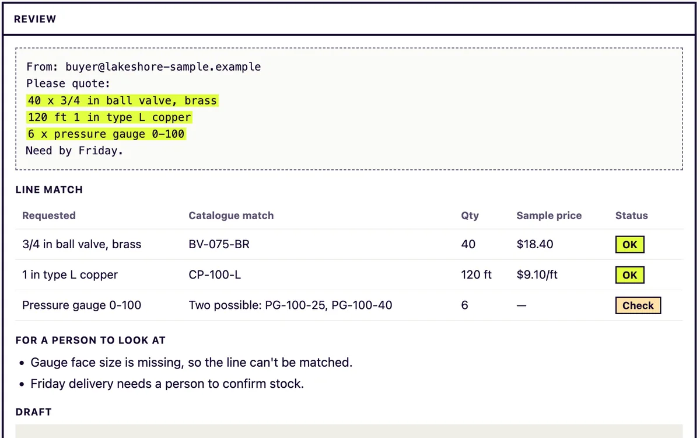
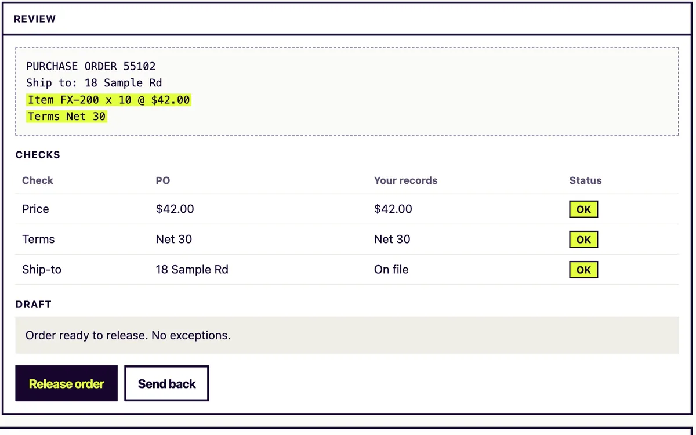
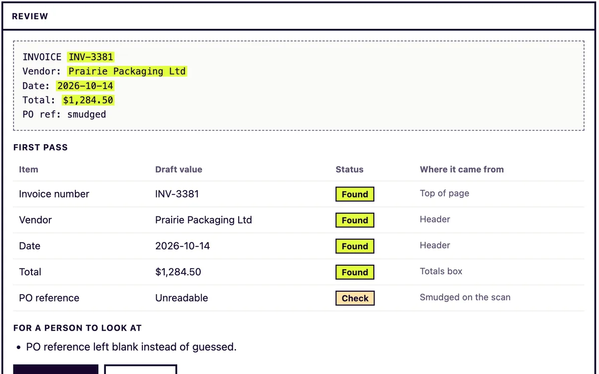

AI agents & automation
AI that takes work off your team's plate.
We build AI-assisted workflows for documents, quotes, orders and follow-up — with your team approving the decisions that matter.
- 2–4 weeksto a working prototype
- 1 workflowto start with
- Freefirst discovery session
Our team’s experience before VisionzLab
Explore that experience →Workflow finder
What's taking your team's time?
Describe the task in a few words. We'll point you to the closest thing we build. Nothing you type leaves your browser.
We don't have a page for that yet, which doesn't mean we can't help. Tell us about it.
Concept demos
Start with one practical workflow.
Three workflows we build often, shown as concept demos with invented data. In each one the assistant prepares the work and a person approves it.
Quote & RFQ Intake
An AI agent that reads incoming RFQs, matches items to your catalogue and drafts quotes for your team to review.

Concept demo · invented dataOrder Entry & Exceptions
An AI agent that enters purchase orders from email and PDF, and flags the ones that need a person.

Concept demo · invented data2–4 weeks
From the start of a Discovery Sprint to a working prototype on your own documents, with a costed build plan and a clear go/no‑go.
→Document Intake
An AI agent that reads the documents your team re-keys, and puts the data where it belongs.

Concept demo · invented dataStart here
The Discovery Sprint
A short, paid sprint on one of your workflows. In 2–4 weeks you get a working prototype, a costed build plan and a clear go/no-go — before you commit to anything bigger.
Who we help
Built for businesses without an AI team.
Businesses where the same paperwork lands every day: quotes, orders, renewals and month-end. Pick yours to see the workflows we'd start with.
Distributors & Manufacturers
AI agents that turn emailed RFQs and purchase orders into draft quotes and entered orders, for your team to approve.
→Machine Shops & Fabricators
An AI first pass on every RFQ: it reads the drawings and models, lists the missing details and drafts the quote, and your estimator approves it.
→Insurance Brokers
AI agents that take submission, certificate and renewal paperwork off your brokers' desks.
→Accountants & Bookkeepers
An AI employee for the routine bookkeeping work — so your team spends its time on clients.
→Small Business
Practical AI for owner-run businesses — start small, keep control, grow from there.
→Mortgage Brokers
Track renewals, organise document requests and prepare follow-ups for your team to review.
→Before You Hire
Before you fill an operations or engineering role, find out which parts AI can take on, and which really need a person.
→Our approach · the 4S
Four stages, one workflow at a time.
We place each workflow at one of four stages, then pick the step that moves it to the next. The 4S check tells you where yours is: eight questions, about two minutes.
Why AI, and where first?
Choose one workflow, one owner and one number. A free discovery session does that with you; a discovery sprint then tests it on your own documents.
→02S2 · SolutionDoes it work on our work?
Test it on your real work and measure it against today. That's what the discovery sprint is for: a working prototype, measured results and a clear go/no-go.
→03S3 · ScaleIs it part of the day?
Connect it to the system where the work ends up, and roll it out to the people who do the work.
→04S4 · SustainWill it keep working?
Give it an owner and a schedule: regular checks, fixes and updates, with people approving what matters.
→Security Review
Worried about AI-powered attacks?
We find the gaps attackers try first, explain them in plain English and help you close them, with a senior engineer checking every finding. A fixed-scope review of your internet-facing systems, email, cloud settings and the AI tools your team already uses.

About VisionzLab
An AI studio for businesses without an AI team
VisionzLab is an AI studio based in Ontario, Canada, working with small and mid-sized businesses across Canada and the US. We teach teams to run their own agents, build agents with them, or build and run them for you, always with your people approving the decisions that matter.
Questions
What is VisionzLab?
VisionzLab (visionzlab.com, sometimes written Visionz Lab) is an AI studio based in Ontario, Canada. We help small and mid-sized businesses in Canada and the US put AI agents to work on everyday workflows such as documents, quotes, orders, email and follow-up, with people approving the decisions that matter.
Who do you work with?
Businesses from owner-run firms up to about 1,000 people, usually without an in-house AI team, across Canada and the United States. We're based in Ontario and work online or on site.
Do we need technical staff to work with you?
No. You need someone who knows the work and can check the output. We set up the technical side with your team and hand over a playbook, or build and run it for you.
How much does it cost?
It depends on the workflow and how much help you want. We don't publish rates. After a free discovery session we quote a defined first step, usually the Discovery Sprint, before you commit to anything bigger.
How do you keep our data and decisions under control?
Agents get only the accounts and permissions you give them, and approval steps, audit trails and limits on what an agent may do are part of every build. We agree what data is used, and who can see it, before work starts.
Can you check our security, not just build AI?
Yes. Our Security Review checks the gaps attackers try first, including internet-facing systems, email and sign-in, cloud settings and the AI tools your team uses, and gives you a plain-English fix list. We then help you close the top items with your IT person or provider.
What if AI isn't the right answer for our problem?
Then we'll say so. Some work is better handled by a simple rules-based automation or by a person, and the discovery session is where we tell you which.
Not sure where to start?
Request a free discovery session. We'll look at your work together and tell you plainly where AI would help — and where it wouldn't.